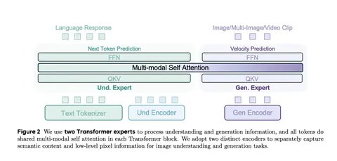

Сегодня разбираем работу о модели Bagel, способной генерировать и редактировать изображения, а также работать с последовательностями кадров. Авторы заявляют результаты, местами превосходящие Flux.1-dev, и позиционируют Bagel как одну из сильнейших открытых VLM. В своё время команда Bytedance занимала топ-1 на Text-to-Image Arena, сейчас уступают GPT, но остаются в числе лидеров.
Свойства мультимодальных моделей
Понятие VLM постепенно меняется: от простых связок «текст-картинка» к системам, где на вход и выход можно подавать любые комбинации текста и изображений. Ключевые свойства таких моделей:
— Дискретное vs непрерывное представление. Дискретные токенизаторы (например, VQ) ограничены размером словаря, из-за чего страдает качество. Bagel использует непрерывные представления.
— Количество энкодеров. Эксперименты показывают, что для понимания и генерации нужны разные свойства эмбеддингов. Поэтому лучше использовать отдельные энкодеры: один для understanding-задач, другой для генерации.
— Авторегрессивность. В Bagel отдельные патчи каждого изображения предсказываются параллельно, а не последовательно.
— Интегрированный или внешний генератор. Возможны два подхода: всё в едином трансформере или через адаптер + внешнюю диффузионную модель. Bagel реализует первый вариант.
— Open vs closed source. Отличительная черта Bagel — это открытый код, редкость среди моделей с непрерывными токенами.
Архитектура
В основе Bagel — крупный трансформер с двумя башнями для задач понимания и генерации. Для понимания используется SigLIP2, а для генерации — Flux VAE. Чтобы согласовать размеры представлений, добавлены MLP-адаптеры.
Архитектура реализует принцип Mixture of Transformers: параллельно работают два трансформера (каждый на ~7B параметров). Токены разделяются между ними, а на отдельных шагах self-attention их представления смешиваются.
Ключевой момент: вместо дискретного next-token prediction используется flow matching, где модель предсказывает векторы скорости в непрерывном пространстве. Эксперименты показывают, что эта стратегия даёт ощутимое преимущество.
Обучающие данные
В основе обучения триплет-схема данных: чистый текст, пары «текст-картинка» для задач понимания и мультимодальные примеры, где текст и изображения перемешаны. Основные источники данных — видео и веб-контент. Большая часть разметки сгенерирована синтетически с помощью Qwen-моделей (до 14B параметров) и DeepSeek для reasoning-трейсов.
Для задачи редактирования авторы собирают данные за счёт аннотации различий между кадрами видео. Также берут связанные по смыслу последовательности изображений из веба, например из step-by-step-инструкций.
Обучение
Обучение проходило в четыре стадии. Сначала проводился алайнмент энкодера. Обучался небольшой MLP-адаптер на выходах SigLIP2, тогда как остальные компоненты оставались замороженными.
Затем претрейн: почти все части модели размораживались (кроме VAE), задачи понимания и генерации смешивались —причём оптимальным оказалось соотношение 4:1 в пользу генеративных задач.
На стадии Continued Training разрешения увеличивались, а набор задач становился разнообразнее.
Завершающий шаг — SFT и дообучение. Здесь использовали промты, переформулированные с помощью DeepSeek, и внедряли reasoning-трейсы.
Результаты
В задачах на понимание изображений Bagel показывает топовые результаты почти во всех бенчмарках, уступая лишь Qwen-2.5-VL на MMMU. В генерации модель на GenEval превосходит Flux и делит второе место со своей облегчённой версией, а в более сложном бенчмарке WICE занимает второе место сразу после GPT-Image.
Разбор подготовил
CV Time
